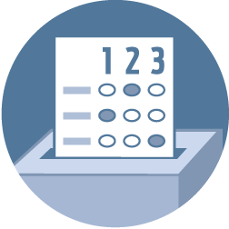

<%= t.include("partials/_embedframe.html") %>
Polls close in
Top races to watch:
CA Governor
SF Mayor
Regional Measure 3
Top Races: Live Results
More Results
Governor
SF Mayor
Chronicle Live Chat

Voter Guide